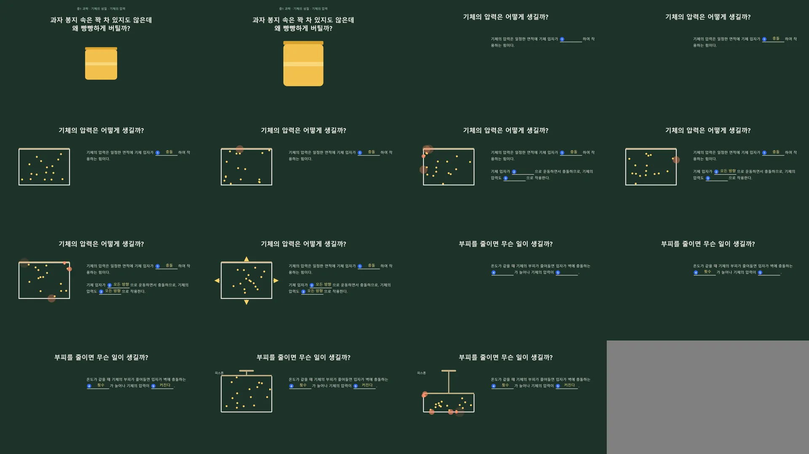
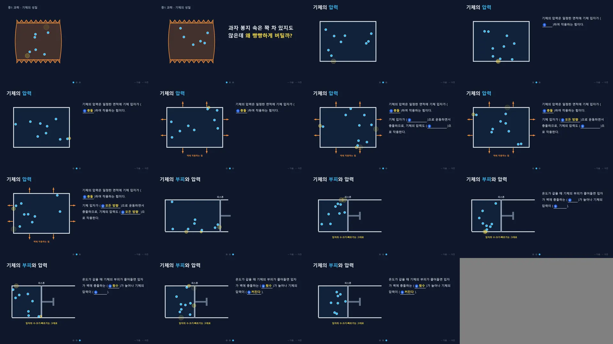
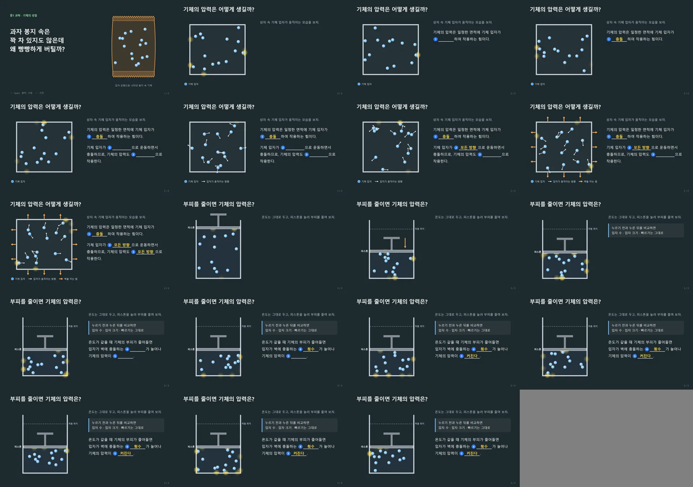
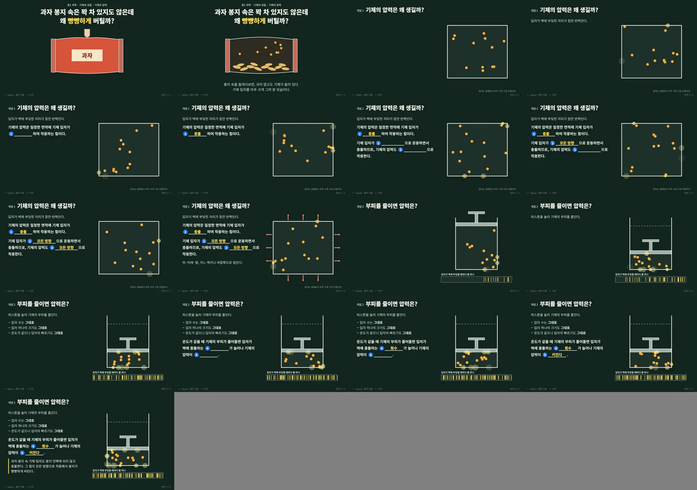
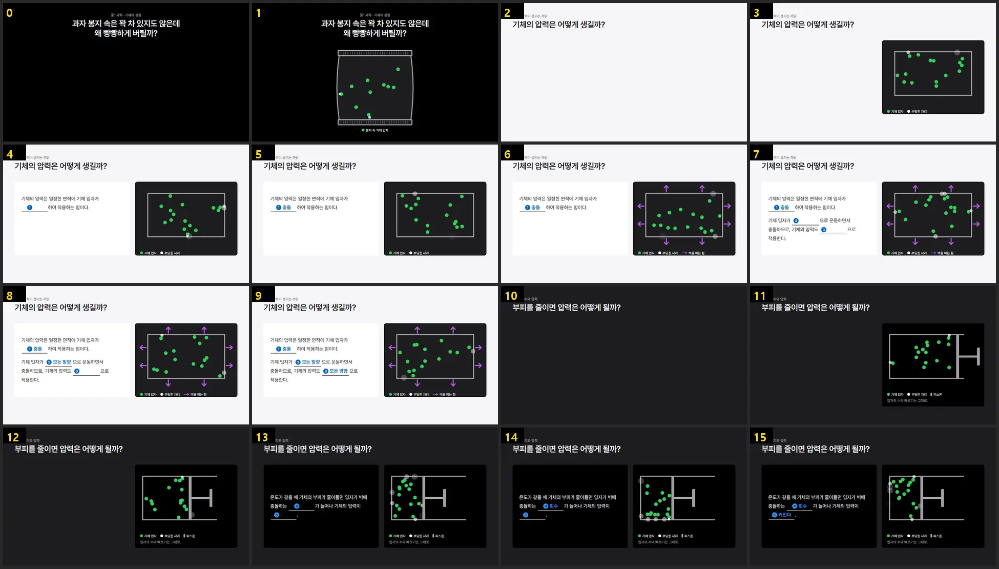
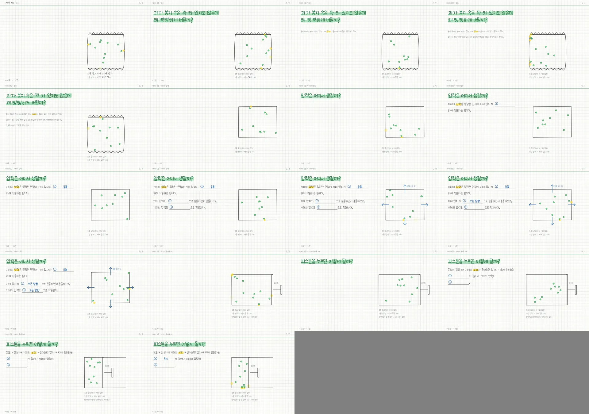
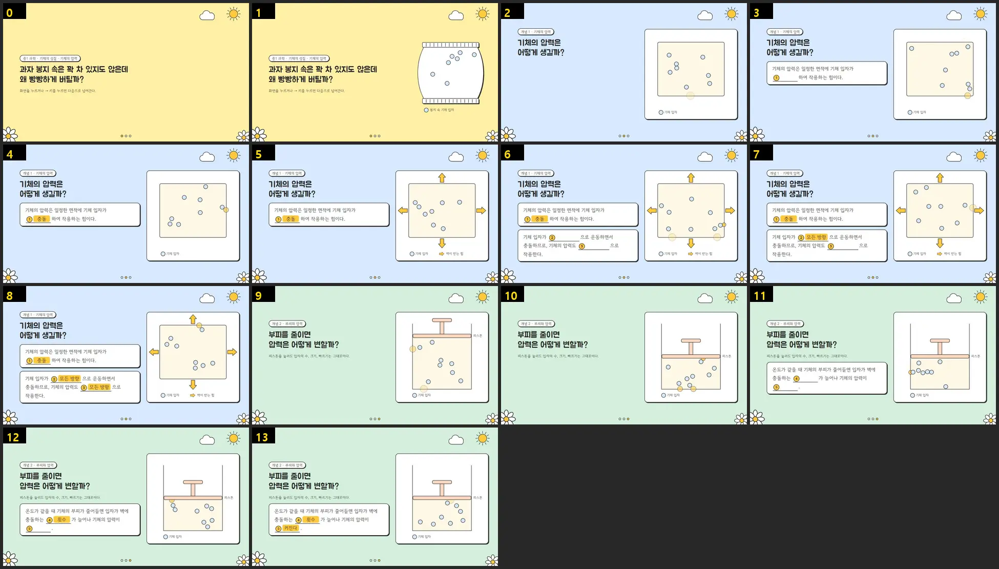
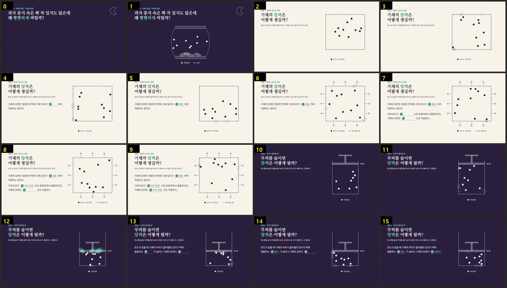

칠판 강의 화면 보기와 준비
10분칠판 강의 화면을 한 번 넘겨 보고 오늘 쓸 파일과 AI 탭 두 개를 준비해보겠습니다!
칠판 강의 화면은 PPT와 무엇이 다를까요?
→ 키를 누를 때마다 그림이 하나씩 움직이고, 학생 학습지와 같은 번호의 빈칸이 열립니다.
칠판 강의 화면은 전자칠판에 띄워 두고 제가 설명하며 넘기는 HTML 한 파일입니다. 1920×1080 무대 하나에 장면이 이어지고, → 키를 누를 때마다 그림이 움직이거나 빈칸 하나가 열립니다. 학생은 종이 개념정리 학습지를 들고 있다가, 화면에 열린 빈칸을 같은 번호 칸에 받아 적습니다.
제가 PPT 대신 이 화면을 쓰는 까닭은 그림이 실제로 움직이기 때문입니다. 기체 입자가 벽에 부딪히는 모습이나 전류가 도는 모습을 애니메이션 설정 없이 그대로 보여 줄 수 있습니다. 설명하면서 빨간 펜과 레이저로 화면 위에 표시하고, 주소 뒤에 ?s=1을 붙이면 학생이 혼자 넘겨 보는 복습판이 됩니다.
지금까지 만든 화면은 칠판 강의 모음에 단원별로 모아 두었습니다. 한 차시 화면은 20장 안팎이라, 오늘 실습에서는 개념 하나만 골라 1~3장으로 줄였습니다. 3장이면 AI가 2~6분 안에 끝까지 쓰기 때문입니다.
오늘 쓰는 파일
아래 꾸러미를 받고, 브라우저에 AI 탭을 두 개 열어 두시길 바랍니다~!
- 꾸러미 받기[꾸러미 한 번에 받기]를 누릅니다. 프롬프트는 이 페이지에서 바로 복사할 수도 있습니다.
- 무료 AI 탭 열기ChatGPT, Gemini, Claude 가운데 하나에 무료 계정으로 로그인합니다.
- 유료 AI 탭 열기유료 계정이 없으시면 옆 선생님 화면을 함께 봅니다.
- 결과가 바로 보이는 창 켜기Gemini는 입력칸 아래 [Canvas]를 켭니다. 결과가 코드로만 나오면 「코드 말고 .html 파일로 만들어 줘」라고 한 번 더 보냅니다.
탭 두 개를 한꺼번에 여는 까닭은 기다리는 시간 때문입니다. 3장짜리도 모델에 따라 2분에서 6분이 걸려서, 저는 두 모델에 같은 프롬프트를 동시에 보내 두고 그동안 프롬프트를 같이 읽습니다.
같은 프롬프트를 두 모델에
25분같은 프롬프트를 무료 모델과 유료 모델에 동시에 보내고 나온 화면을 점검표로 견주어보겠습니다!
프롬프트 하나를 두 탭에 붙여 넣기
아래 프롬프트를 복사해 두 탭에 똑같이 붙여 넣어보겠습니다!
- 프롬프트 복사하기위 상자의 [복사]
- 무료 탭에 붙여 넣고 보내기입력칸에 Ctrl+V, 보내기 화살표
- 유료 탭에도 똑같이 보내기같은 글을 한 글자도 고치지 않고 보냅니다.
- 결과 화면 열기오른쪽 창(Claude 아티팩트, ChatGPT·Gemini 캔버스)에서 봅니다. 창이 없으면 코드를 복사해 메모장에 붙이고 강의.html 로 저장해 더블클릭합니다.
- 끝까지 넘겨 보기화면을 한 번 누르고 →, 끝에서 ← 로 처음까지
막혔을 때
코드가 중간에 끊겼습니다. 무료 모델은 한 번에 쓰는 길이가 짧아 끊길 수 있습니다. 같은 대화에 「이어서 써 줘」를 보내 끊긴 곳부터 쓰게 합니다. 그래도 이어지지 않으면 점검표의 첫 줄에 ×를 적고 다른 쪽 결과로 넘어갑니다.
→ 키를 눌러도 넘어가지 않습니다. 커서가 채팅 입력칸에 있으면 키가 화면으로 가지 않습니다. 화면을 한 번 누른 뒤 → 키를 누릅니다.
메모장으로 저장한 파일이 글자로만 보입니다. 이름이 강의.html.txt 로 저장된 경우입니다. 저장할 때 파일 형식을 「모든 파일」로 바꾸고 이름을 강의.html 로 적습니다.
같은 글을 두 모델에 넣어야 결과의 차이가 모델의 차이로 보입니다. 그래서 두 탭에 보낼 때 한 글자도 고치지 않습니다.
저는 연수 전에 이 프롬프트를 Claude의 네 모델(Haiku·Sonnet·Opus·Fable)에 같은 조건으로 넣어 봤습니다. 넷 모두 3장을 끝까지 썼고, 걸린 시간은 2분에서 5분 50초였습니다. ChatGPT와 Gemini의 무료 모델은 제가 미리 돌려 보지 못해서, 오늘 선생님들 결과로 함께 보려고 합니다.
프롬프트는 어떤 칸으로 되어 있을까요?
기다리는 동안 프롬프트를 칸별로 읽어보겠습니다!
글자 크기는 처음에 숫자로만 적었습니다. 그랬더니 같은 프롬프트인데도 결과마다 제목이 60px, 64px, 68px, 72px로 달랐습니다. 그래서 그대로 넣을 CSS 한 줄을 주었고, 그다음 시험에서는 네 결과 모두 그 줄을 글자 그대로 넣었습니다.
「주의할 점」에는 입자 모형에서 학생이 잘못 알기 쉬운 것을 적었습니다. 부피를 줄여도 입자 수와 크기, 빠르기는 그대로이고, 압력은 아래로만이 아니라 모든 벽에 작용합니다. 이 칸을 적어 두었더니 가벼운 모델도 이 규칙을 지켰습니다. 「그림으로 먼저 보여 준 뒤 빈칸을 연다」는 줄은 가벼운 모델이 피스톤을 누르기 전에 정답부터 연 것을 보고 더했습니다.
점검표로 두 결과 견주기
칸을 누를 때마다 ○ △ × 가 바뀌고, 이 기기에 저장됩니다.
저는 끝까지 넘긴 뒤 ← 로 처음까지 돌아와 보고, 빠르게 연타해 봅니다. 입자는 부피를 줄이기 전과 후에 개수를 세어 봅니다. 종이로 쓰실 분을 위해 같은 표를 비교 점검표로 넣어 두었습니다.
두 결과에서 달랐던 점
10분두 결과에서 달랐던 점을 한 줄씩 올리고, 제가 미리 돌려 본 네 모델 결과와 나란히 놓아보겠습니다!
무료 모델과 유료 모델의 결과에서 가장 달랐던 점은 무엇이었나요?
규칙을 지켰는지는 점검표로 보이지만, 어느 화면으로 수업하고 싶은지는 선생님마다 다릅니다. 그래서 점수보다 「달랐던 점」을 묻습니다. 글이 올라오면 두어 분께 그 화면을 앞에 띄워 주시길 부탁드리려고 합니다.
제가 미리 돌려 본 네 모델
넷 모두 넘기기·빈칸·입자 규칙은 지켰고, 차이는 수업 순서와 보여 주는 방식에서 났습니다.




11월 13일에 Claude의 네 모델에 오늘과 같은 프롬프트를 넣고, 스킬 없이 한 번에 쓰게 했습니다. 위 그림은 결과 화면을 단계마다 찍어 이어 붙인 것입니다. 넷 모두 빈칸 ①~⑤의 번호와 정답을 지켰고, 부피를 줄여도 입자 수와 빠르기가 그대로였습니다.
차이는 규칙이 아니라 수업을 짜는 쪽에서 났습니다. 가벼운 모델은 관찰보다 정답을 먼저 열었고, 상위 모델은 운동 방향 화살표나 충돌 기록 띠처럼 개념을 눈으로 보이게 하는 장치를 스스로 더했습니다.
그 전에 학습지 한 장(빈칸 24개)으로 시험했을 때는, 스킬 없이 시킨 중간 모델이 학습지에 없는 정답을 지어냈고 스킬을 준 가벼운 모델은 빈칸 번호와 정답을 다 지켰습니다. 그래서 저는 모델을 고르기 전에 학습지 문장과 정답, 주의할 점부터 챙깁니다.
무료 요금제에서 어떤 모델이 답하는지는 서비스마다 달라서, 위 결과는 무료·유료로 나누지 않고 모델 이름으로 적었습니다.
디자인만 바꿔 보기
15분디자인 칸만 다른 프롬프트를 같은 모델에 넣어, 손글씨 노트나 디자인 서랍의 모습으로 바꿔보겠습니다!
손글씨 노트판
모눈종이 위에 손글씨 글꼴로 한 줄씩 써지고, 형광펜이 그어지는 판입니다.
이 판은 제가 유튜브 개념 강의에 쓰는 손글씨 단권화 노트의 모습을 3장판으로 옮긴 것입니다. 글꼴(나눔손글씨 바른히피)은 인터넷에서 불러오므로, 이 판으로 만든 화면은 열 때 인터넷이 연결되어 있어야 손글씨로 보입니다.
디자인 서랍판
디자인 서랍에서 DESIGN.md를 하나 받아, 프롬프트와 함께 보내보겠습니다!
- 디자인 서랍 열기디자인 서랍을 새 탭으로 엽니다.
- 마음에 드는 디자인의 DESIGN.md 받기카드의 [DESIGN.md 받기]
- 아래 프롬프트 복사하기[복사]
- DESIGN.md를 첨부하고 보내기입력칸의 첨부 단추(＋ 또는 클립)로 파일을 올리고 프롬프트를 붙여 넣습니다.
DESIGN.md는 한 웹사이트의 색, 글꼴 크기, 간격 같은 규칙을 적은 글입니다. 이 프롬프트는 DESIGN.md의 색과 모양은 따르되, 글자 크기와 넘기기·빈칸 규칙은 프롬프트 쪽을 따르게 적어 두었습니다. DESIGN.md에 적힌 웹 페이지 글자 크기는 교실 맨 뒤에서 읽기에 작기 때문입니다.
같은 규칙, 다른 겉모습
같은 모델(Sonnet)에 세 판을 넣었더니 넘기기·빈칸·순서는 같고 겉모습만 달라졌습니다.




11월 13일에 Sonnet 하나로 기본판, 손글씨판, 디자인 서랍판 두 가지(햇살 게시판, 보랏빛 밤)를 만들었습니다. 넷 모두 받은 글자 크기 CSS를 그대로 넣었고, 화면에 쓰인 글자 크기도 그 안에서만 나왔습니다.
손글씨판은 처음에 상자를 그리고 입자를 넣고 이름표를 붙이는 일을 단계마다 따로 나눠 단계가 20개까지 늘었습니다. 그래서 「그림은 처음부터 보이고 움직인다」는 줄을 더해 다시 만들었고, 17단계로 줄었습니다. 위 손글씨 그림은 고친 프롬프트로 만든 결과입니다.
내 개념으로 1~3장 만들기
30분내 수업의 개념 하나로 재료 칸을 채워, 내 칠판 강의 화면을 만들어보겠습니다!
재료 칸 채우기
아래 칸을 채우면 고른 디자인의 프롬프트가 완성됩니다.
칸을 채우면 아래 프롬프트가 바로 바뀝니다. 적은 내용은 이 기기에만 저장됩니다.
- 디자인 고르기4단계에서 마음에 든 판
- 학습지 문장과 정답 적기장면 ②에 1~2개, 장면 ③에 1~2개. 번호는 학습지 번호 그대로
- 주의할 점 적기학생이 자주 헷갈리는 것 2~3개, 아직 배우지 않은 낱말
- 완성된 프롬프트 복사해 보내기디자인 서랍판이면 DESIGN.md도 함께 첨부
- 빈칸 번호와 정답 맞춰 보기→ 로 넘기며 학습지와 한 줄씩
장면은 3장, 빈칸은 3~5개로 잡았습니다. 이 정도면 어느 모델이든 2~6분 안에 끝까지 쓰고, 남은 시간에 한두 번 고쳐 볼 수 있습니다.
결과를 가장 크게 바꾸는 칸은 「주의할 점」입니다. 기체의 압력에서 입자 수와 빠르기를 적어 두었더니 네 모델이 모두 지켰습니다. 그래서 저는 내 개념에서 학생들이 자주 틀리는 그림과 아직 배우지 않은 낱말을 이 칸에 먼저 적습니다.
고칠 때는 한 장면씩
고칠 곳은 한 번에 하나만, 장면 번호와 함께 보내보겠습니다!
한꺼번에 여러 곳을 고쳐 달라고 하면 AI가 파일 전체를 다시 쓰면서 잘 되던 장면까지 바뀌는 일이 생깁니다. 그래서 저는 장면 번호를 적고, 「다른 장면은 그대로 둬」를 붙여 하나씩 고칩니다.
가상실험실·영상·3D 모형 붙이기
주소를 위 (선택) 칸에 넣으면 AI가 장면 안에 칸을 만들어 줍니다.
| 과목 | 자료 | |
|---|---|---|
| 화학 | PhET 기체의 성질 | |
| 물리 | PhET 회로 만들기 | |
| 물리 | PhET 빛의 굴절 | |
| 생물 | PhET 자연 선택 | |
| 지구과학 | PhET 중력과 궤도 | |
| 3D 모형 | NASA 퍼서비어런스 탐사 로버(GLB) |
만든 HTML을 더블클릭해 열면 유튜브는 칸 안에서 재생되지 않고 「오류 153」이 뜹니다. 칸 아래 「새 창에서 열기」 단추로 유튜브에서 엽니다.
막혔을 때
유튜브 칸에 「오류 153」이 뜹니다. 파일을 더블클릭해 연 경우입니다. 「새 창에서 열기」로 열거나, 배포한 주소로 열면 칸 안에서 재생됩니다.
3D 모형 칸이 비어 있습니다. 내 컴퓨터에 있는 GLB 파일을 넣은 경우입니다. 파일로 연 HTML에서는 브라우저가 이 파일을 막습니다. 인터넷 주소의 GLB를 쓰거나 Sketchfab의 퍼가기 코드를 씁니다.
실험실 칸을 누른 뒤 → 키가 안 먹습니다. 키가 칸 안으로 들어간 것입니다. 칸 밖을 한 번 누르거나 「다음」 단추를 누릅니다.
시뮬레이터나 3D 모형을 AI에게 새로 그려 달라고 하면 코드가 길어지고 기다리는 시간도 늘어납니다. 원리가 틀린 그림이 나올 위험도 있습니다. 그래서 저는 PhET 한국어판처럼 이미 검증된 자료의 주소를 먼저 찾아 붙입니다.
과목별 주소는 가져다 쓸 재료 목록에 PhET 16개, GeoGebra·Desmos, 3D 모형 출처까지 모아 두었습니다. PhET를 넣은 장면 아래에는 출처 한 줄(PhET Interactive Simulations, University of Colorado Boulder)을 붙입니다.
나만의 스킬, 배포, 다시 보실 곳
10분프롬프트와 스킬이 어떻게 다른지, 나만의 스킬을 만들거나 GitHub에서 받는 법, 배포하지 않고 파일로 열어도 어디까지 되는지 정리해보겠습니다!
프롬프트, MD 파일, 스킬은 무엇이 다를까요?
셋 다 AI에게 주는 글이고, 다른 점은 얼마나 오래 두고 쓰는가입니다.
| 쓰는 법 | 통하는 범위 | |
|---|---|---|
| 프롬프트 | 만들 때마다 입력칸에 붙여 넣습니다. | 그 메시지 한 번 |
| MD 파일 첨부 | 규칙을 적은 .md 파일을 대화에 첨부합니다. | 그 대화 안에서 |
| 프로젝트·Gem 지침 | ChatGPT 프로젝트나 Gemini Gem의 지침 칸에 넣어 둡니다. | 그 프로젝트·Gem 안에서 |
| 스킬 | 한 번 올려 두면 관련된 부탁을 할 때 AI가 꺼내 읽습니다. | 다음 대화에도 |
오늘 쓴 3장판 프롬프트는 3,000자 남짓입니다. 20장짜리 한 차시를 만들려면 설계서와 과목별 규칙까지 더해야 해서, 매번 붙여 넣기에는 너무 깁니다. 그래서 저는 이 규칙들을 스킬로 묶어 두고 「칠판 강의 화면 만들어 줘」라고만 부탁합니다.
위 zip 파일을 올리는 순서는 바로 아래 「나만의 스킬」 4번에 적었습니다. 스킬 기능이 없는 AI에서는 웹채팅판 프롬프트를 쓰거나, 규칙 파일(.md)을 대화에 첨부해 그 대화 안에서 따르게 합니다. 메뉴 이름과 요금제별로 열려 있는 기능은 자주 바뀌어서, 저는 쓰기 직전에 한 번 확인합니다.
나만의 스킬은 어떻게 만들까요?
스킬은 SKILL.md 파일이 든 폴더 하나입니다. 맨 위에 이름과 설명을 적고, 그 아래에 일하는 순서와 꼭 지킬 것을 적습니다.
lecture-board/폴더 이름은 스킬 이름(name)과 같게, 영어 소문자와 하이픈으로SKILL.md맨 위 name · description, 그 아래 일하는 순서와 꼭 지킬 것references/길어서 따로 둔 규칙 (있을 때만)lecture-spec.md칠판 강의 화면 설계서subject-chemistry.md화학 그림·정확성 규칙대화로 규칙을 다 정한 뒤 「지금까지 정한 규칙으로 스킬을 만들어 줘」라고 하면 SKILL.md가 든 폴더를 만들어 줍니다.
몇 번 고쳐서 잘 된 프롬프트를 SKILL.md 본문에 넣고, 맨 위에 name과 description만 더합니다.
AI가 같은 실수를 하면 그 고칠 점을 스킬 파일에 더합니다. 다음 대화부터는 같은 지적을 다시 하지 않아도 됩니다.
- 폴더 만들기이름은 영어 소문자와 하이픈으로(예: my-lesson-board). SKILL.md 의 name 과 같게 적습니다.
- SKILL.md 쓰기위 틀을 복사해 메모장에 붙이고 SKILL.md 로 저장합니다. description 은 200자 안에서 언제 쓰는지를 구체적으로 적습니다.
- 폴더째 압축하기폴더를 오른쪽 클릭해 [압축(ZIP)]. zip 을 열면 폴더 하나가 보이고, 그 안에 SKILL.md 가 있어야 합니다.
- Claude에 올리기[Settings] → [Capabilities]에서 Code execution and file creation 을 켜고, [Customize] → [Skills] → ＋ → [Create skill] → [Upload a skill]
- 부탁해서 시험하기새 대화에서 부탁해 보고, 스킬을 쓰지 않으면 description 을 고칩니다.
스킬에서 가장 중요한 줄은 description입니다. AI는 처음에 스킬의 이름과 설명만 읽고, 부탁이 설명과 맞을 때 본문을 펼쳐 읽기 때문입니다. 그래서 저는 description에 선생님들이 실제로 할 법한 말(「칠판 강의 화면 만들어 줘」)을 그대로 넣습니다.
제 스킬은 대부분 Claude와 대화하며 규칙을 정한 뒤, 그 규칙을 스킬로 묶어 달라고 해서 시작했습니다. 그 뒤로 AI가 같은 실수를 하면 고칠 점을 스킬 파일에 한 줄씩 더합니다. 제 말투 검사 스킬은 AI가 쓴 글에서 제가 직접 지적한 표현을 모아 만든 것입니다.
여기 적은 메뉴 이름과 요금제는 제가 2026년 11월 14일에 Claude 도움말(영어 화면)을 확인해 정리했습니다. Claude는 무료 요금제에서도 스킬을 올릴 수 있고, 설정에서 코드 실행 기능을 켜야 합니다. ChatGPT도 SKILL.md로 스킬을 만드는 기능을 안내하고 있지만, 어떤 요금제에서 쓸 수 있는지는 아직 확인하지 못했습니다. 스킬 기능이 없는 AI에서는 SKILL.md를 대화에 첨부하거나 Gem·프로젝트의 지침 칸에 넣어 씁니다.
GitHub에서 스킬 받아 쓰기
다른 사람이 만든 스킬도 GitHub에서 받아 쓸 수 있습니다. 받은 뒤에는 SKILL.md를 먼저 읽고 올립니다.
| 저장소 | 들어 있는 것 |
|---|---|
| anthropics/skills | Anthropic이 올린 예시 스킬(Word·PDF·PPT·Excel 문서 만들기 등)과 새 스킬을 만들 때 쓰는 틀(template) |
| epoko77-ai/im-not-ai | AI가 쓴 한국어 글의 번역투·AI 말투를 고치는 스킬(MIT). Claude Code·Codex·Gemini CLI 설치 안내가 있습니다. |
| dotoridot/korean-humanizer | 한국어 AI 문장을 뜻은 그대로 두고 다듬는 스킬(MIT) |
| scienceisjo/growing-teachers | 이 페이지에서 받는 칠판 강의 화면 스킬과 손글씨 노트 강의 스킬도 GitHub의 이 폴더에 들어 있습니다. |
- 저장소 열고 스킬 폴더 찾기예) anthropics/skills 에서 skills 폴더를 열고 쓰고 싶은 스킬 폴더를 고릅니다.
- 저장소 내려받기저장소 첫 화면의 초록 [Code] 단추 → [Download ZIP]
- 압축 풀고 SKILL.md 읽기메모장으로 열어 무슨 일을 하는 스킬인지, scripts 폴더(실행되는 코드)가 있는지 봅니다.
- 스킬 폴더 하나만 다시 압축하기SKILL.md가 든 폴더 하나만 골라 압축합니다.
- Claude에 올리기위 「나만의 스킬」 4번과 같습니다. Claude Code 는 폴더를 내 사용자 폴더의 .claude/skills/ 안에 넣습니다.
스킬에는 AI가 실행하는 코드(scripts 폴더)가 들어 있을 수 있습니다. 저는 출처를 아는 저장소에서 받은 것만 올리고, 올리기 전에 SKILL.md와 scripts를 열어 봅니다. Claude 도움말도 받은 스킬은 켜기 전에 살펴보라고 안내합니다.
저장소 전체를 압축한 파일을 그대로 올리지 않고 스킬 폴더 하나를 따로 압축하는 까닭은, Claude 도움말이 zip 안에 스킬 폴더가 바로 들어 있어야 한다고 안내하기 때문입니다. Claude Code를 쓰시면 /plugin marketplace add anthropics/skills 한 줄로 Anthropic 예시 스킬을 한꺼번에 받을 수도 있습니다.
남이 만든 스킬을 고쳐서 다시 나눌 때는 저장소의 LICENSE 파일을 보고 출처를 남깁니다. 제 말투 검사 스킬도 위 두 한국어 저장소(MIT)의 패턴을 일부 빌려 와 우리 말투에 맞게 고쳤고, 스킬 안에 두 저장소의 주소와 라이선스를 적어 두었습니다.
배포하지 않고 파일로 열어도 될까요?
유튜브 칸 하나만 빼면, 더블클릭해 연 파일에서도 효과음·실험실·3D 모형이 됩니다.
| 기능 | 더블클릭해 연 파일 |
|---|---|
| 효과음(Web Audio로 만든 소리), 같은 폴더의 소리 파일 | 됩니다. 첫 클릭이나 키 입력 뒤부터 납니다. |
| PhET·GeoGebra 같은 가상실험실 칸 | 됩니다 |
| 인터넷 주소의 3D 모형(model-viewer) | 됩니다 |
| 인터넷 글꼴, 같은 폴더의 글꼴 파일과 그림 | 됩니다 |
| 체크·위치 기억, 복사 단추 | 됩니다 |
| 유튜브 칸 | 안 됩니다. 칸 안에 「오류 153」이 뜹니다. |
| 내 컴퓨터의 3D 파일(GLB), 데이터 파일(JSON) 불러오기 | 안 됩니다. 브라우저가 막습니다. |
배포가 어려운 선생님도 계셔서, 11월 14일에 같은 HTML 파일을 크롬에서 더블클릭해 연 것과 배포한 주소로 연 것을 나란히 시험했습니다. 효과음, 같은 폴더의 소리 파일, PhET·GeoGebra 칸, 인터넷 주소의 3D 모형, 글꼴과 그림, 체크 기억과 복사 단추는 두 경우 모두 됐습니다.
차이는 두 가지였습니다. 유튜브 칸은 파일로 열면 「오류 153」이 뜨고 재생되지 않았고, 내 컴퓨터의 3D 파일이나 데이터 파일을 불러오는 것은 브라우저가 막았습니다. 그래서 저는 수업 컴퓨터 한 대에서 쓸 때는 파일로 열고, 유튜브만 새 창으로 엽니다. 학생에게 링크로 나눠 주거나 유튜브를 칸 안에서 틀고 싶을 때 배포합니다.
크롬에서 시험한 결과입니다. 웨일, 크롬북, 아이패드에서는 아직 시험하지 못했습니다.
다시 보실 곳
제가 만든 칠판 강의 화면과 손글씨 노트 강의를 단원별로 모아 두었습니다.
한 차시 전체를 스킬로 만드는 순서를 적어 두었습니다.
디자인 서랍판에 첨부할 DESIGN.md를 고르는 곳입니다.
오늘 쓴 프롬프트와 점검표는 2단계에, 스킬 파일은 이 단계에 두었습니다. 다시 열어 보실 때 바로 내 수업 화면으로 이어지도록, 5단계 재료 칸에 적으신 내용은 이 기기에 저장해두었습니다.
만족도 조사 — 다음 연수를 위해 3분만 부탁드립니다